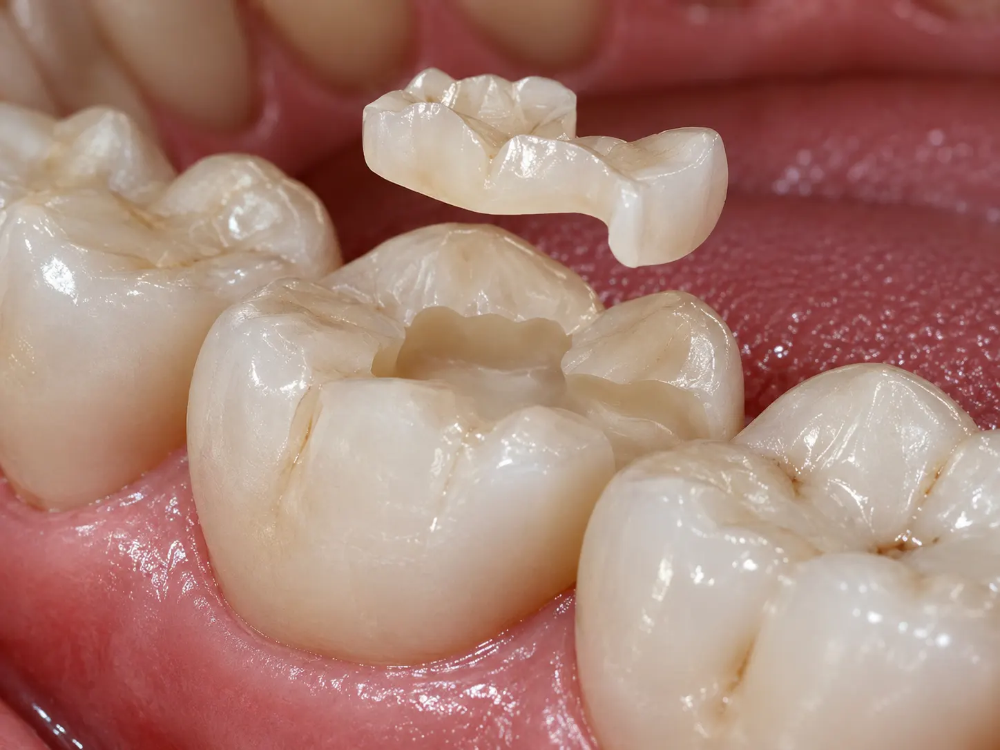
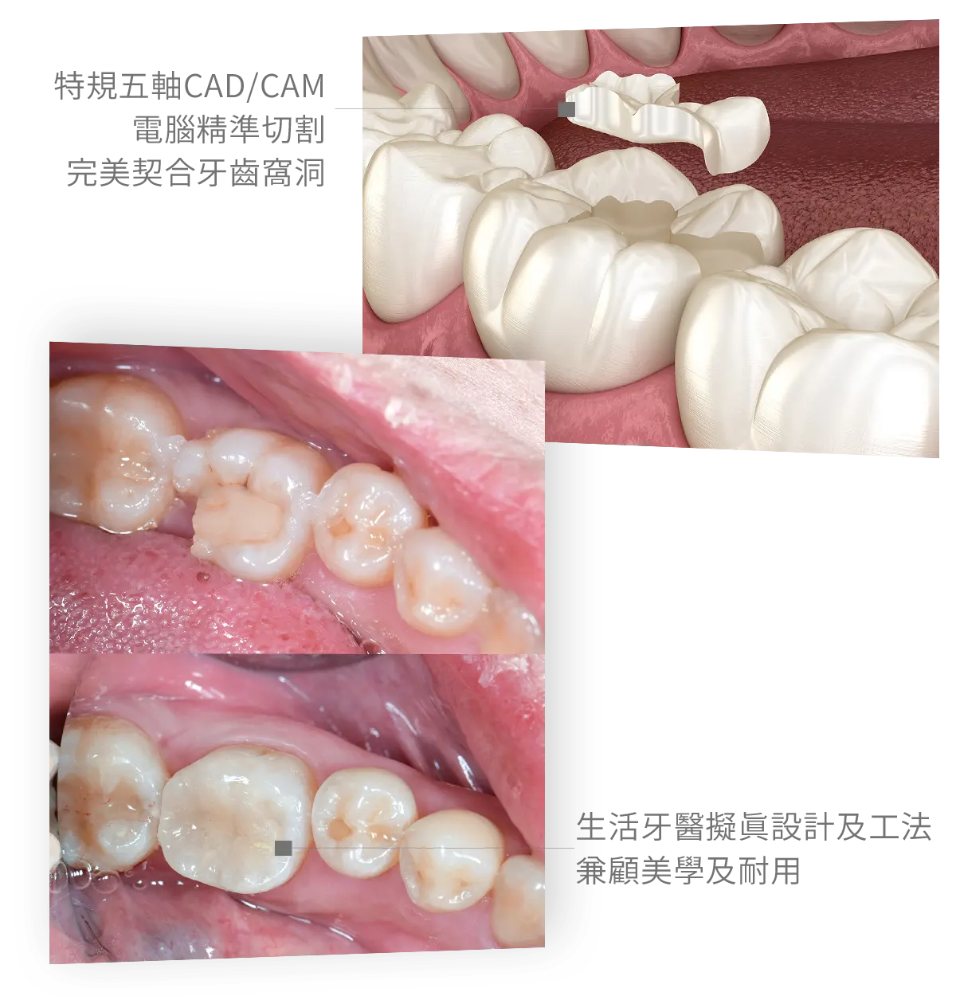

療程項目
3D 齒雕Dental Inlay & Onlay
保留更多齒質的精密陶瓷修復
3D 齒雕透過數位掃描與陶瓷製作，依照缺損範圍客製嵌體或覆蓋體，重建牙齒外形、接觸點與咬合功能。
25+
年臨床經驗
1000+
成功案例
2
年安心保固

療程介紹
了解 3D 齒雕，精準修復缺損
當蛀牙或舊填補物造成的缺損較大，樹脂補牙可能不易穩定承受長期咬合；若剩餘齒質仍足夠，也不一定需要以牙冠包覆整顆牙齒。
3D 齒雕會依牙齒缺損位置與大小，設計嵌體（Inlay）或覆蓋體（Onlay），只修整需要重建的範圍，再以黏著方式固定陶瓷修復體。
是否適合此療程，仍需綜合評估蛀牙深度、剩餘齒質、裂痕、牙髓狀況、咬合力量與清潔習慣，並由醫師說明替代治療方式。

保留健康齒質
依缺損範圍修整，不必一律包覆整顆牙齒
客製陶瓷製作
依數位資料設計牙齒外形、鄰接面與咬合
色澤自然
陶瓷可依鄰牙色澤選配，兼顧修復與外觀
精密密合
搭配口內掃描、數位設計與黏著流程完成修復
生活牙醫的優勢
數位設計結合精密黏著
從診斷、修整到咬合調整，每個環節都影響 3D 齒雕的密合度與長期穩定。

完整口腔評估
確認缺損深度、牙髓健康、裂痕與咬合，選擇適合的修復範圍。
數位口內掃描
擷取牙齒與咬合資料，減少傳統印模的不適並利於設計溝通。
客製化設計
依鄰牙接觸、牙齒外形與咬合關係規劃每一顆陶瓷齒雕。
全陶瓷材質
選用與牙色協調的陶瓷材料，兼顧後牙修復所需的外觀與功能。
精密黏著流程
依材料與牙齒條件執行表面處理、隔濕、黏著與邊緣清潔。
完成後追蹤
持續檢查咬合、邊緣與清潔狀況，協助維持修復體穩定。
適用情況
什麼狀況需要3D 齒雕？
當牙齒缺損範圍較大、一般樹脂補牙不易穩定承受咬合，但仍有足夠健康齒質可供黏著時，可由醫師評估是否適合使用 3D 齒雕進行修復。
中至大範圍蛀牙
蛀牙範圍較廣，移除感染齒質後的缺損已超出一般小範圍樹脂補牙的適用條件。
大型舊填補物需更換
舊填補物出現鬆脫、滲漏、變色或邊緣蛀牙，需要重新清除並重建牙齒外形與咬合。
牙齒局部斷裂或齒尖薄弱
部分齒質崩裂或剩餘齒尖較薄弱，可評估以陶瓷覆蓋體保護受力區域並保留可用齒質。
樹脂填補反覆磨耗或崩裂
後牙承受較大咬合力，若大範圍樹脂填補反覆損壞，可評估較穩定的客製陶瓷修復方式。
根管治療後需要修復保護
根管治療後若仍保有足夠健康齒質，可由醫師依缺損與咬合條件評估 3D 齒雕或牙冠等修復選擇。
是否適合 3D 齒雕，仍需由醫師依蛀牙深度、剩餘齒質、裂痕、牙髓健康、咬合力量與清潔條件綜合判斷。
療程流程
從檢查到完成修復
醫師會先排除牙髓與牙周問題，再依缺損範圍安排修整、掃描、製作與黏著。
口腔檢查
檢查蛀牙、裂痕、牙髓與咬合狀況，確認合適的修復方式。
移除蛀牙與舊填補
清除受感染齒質與不良填補物，保留可用的健康牙齒結構。
修整與數位掃描
完成齒形修整後擷取口內資料，建立客製化設計依據。
陶瓷齒雕製作
依牙齒外形、接觸點與咬合關係設計並製作陶瓷修復體。
試戴與黏著
確認密合、外形與咬合後完成黏著，並安排後續追蹤。
修復方式比較
找到適合的治療範圍
| 比較項目 | 3D 齒雕精密修復 | 樹脂補牙 | 假牙冠 |
|---|---|---|---|
| 常見適用範圍 | 中至大範圍缺損 | 小範圍缺損 | 大範圍缺損或齒質脆弱 |
| 修復方式 | 客製陶瓷嵌體／覆蓋體 | 口內直接填補 | 包覆整顆牙齒 |
| 健康齒質保留 | ◎ 依缺損範圍修整 | ◎ 通常較多 | △ 需環繞修磨 |
| 外觀與色澤 | ◎ 接近自然牙色 | ○ 可配合牙色 | ◎ 可客製牙色 |
| 治療考量 | 需有足夠齒質供黏著 | 大範圍時穩定性有限 | 適用條件與修磨量不同 |
常見問題
3D 齒雕療程FAQ
整理諮詢時常見的問題，協助您先了解基本治療方向。
一般樹脂補牙多由醫師直接在口內塑形；3D 齒雕則先取得牙齒資料，再於口外製作客製化陶瓷嵌體或覆蓋體，最後以黏著方式固定。兩者適用的缺損大小與牙齒條件不同，需經檢查後選擇。
常見於後牙有中至大範圍蛀牙、舊填補物範圍較大、部分齒尖需要保護，但仍保有足夠健康齒質可供黏著的情況。若有深層蛀牙、明顯裂痕或牙髓問題，可能需要其他前置治療或不同修復方式。
使用年限會受到剩餘齒質、黏著條件、咬合力量、磨牙習慣、飲食與清潔維護影響。完成後應依醫師建議定期檢查；若有磨牙或緊咬習慣，也可能需要搭配咬合板保護。
不一定。若蛀牙已接近牙髓、牙齒已有自發痛或感染，醫師會先評估牙髓是否能保留。3D 齒雕是修復缺損的方式，不能取代必要的根管治療。
牙醫知識
關於 3D 齒雕，你該知道的事
整理諮詢時常見的問題，協助您在看診前先掌握基本方向。

立即諮詢3D 齒雕
歡迎預約諮詢，由醫師一對一親診為您規劃療程，讓我們一起打造最符合需求的治療方案